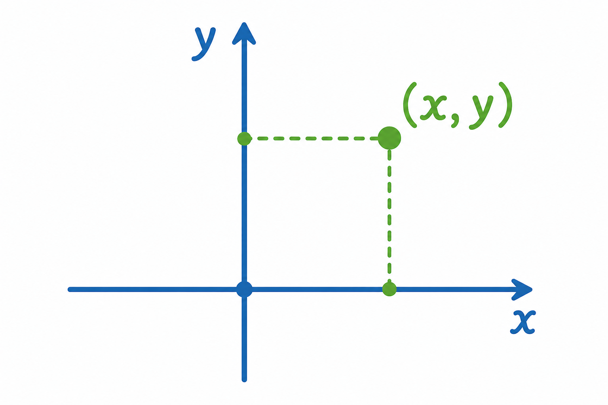

1
układ współrzędnych
система координат

📘 Co to jest? Що це?
Układ współrzędnych to „mapa” płaszczyzny z dwiema osiami — do opisu położenia punktów.
Система координат — «карта» площини з двома осями — для опису положення точок.
⭐ Zapamiętaj Запам'ятай
osie X i Y
Осі: X (горизонтальна) і Y (вертикальна).
✅ Przykłady Приклади
- oś X i Y
- punkt (3, 2)
- kratka milimetrowa
- mapa kratkowa
- początek (0,0)